| Fian Siyad | 668816 |
| Mark Kasii | 670173 |
Lantern Circle is a working mobile prototype of the platform proposed in our midterm pitch. It lets FGM survivors, and people worried about a girl at risk, ask for help anonymously and be matched with the right responder.
People affected by FGM, and those trying to protect girls, have no safe, anonymous and fast way to reach the right responder. Fear of exposure stops people asking, and a shared inbox has no fallback when nobody answers.
The prototype is a front-end demonstration. Matching and helper replies are simulated inside the app; the Django backend described in the pitch is future work (section 8).
We followed a user-centred design (UCD) process in short iterations: understand the users, define requirements, design, build, then test and refine.
The pitch named four groups: requesters (survivors, relatives, neighbours), peer volunteers, verified professionals and triage staff. Requesters are the most vulnerable. They may fear being seen, may share a phone, and may have little experience with apps, so their safety and ease of use drove every design choice.
Each feature on the pitch's "What Lantern Circle offers" slide, and each step of the request flow, became a requirement (section 3).
Screens were planned as one simple path per task with one main action each. Design rules were set before coding: a calm brand palette, large tap targets, plain language, and a quick-exit button on every screen.
| Tool | Purpose | Why we chose it |
|---|---|---|
| React Native | One codebase for iPhone and Android | Widely used and well documented |
| Expo (SDK 58) | Run on a phone with Expo Go, no app store | Fastest setup for beginners |
| JavaScript | Programming language | No compile step or types to learn |
| Git and GitHub | Version control and submission | Keeps history; required by the course |
| Playwright | Automated screen captures and walkthrough | Checks every screen loads without errors |
The full journey ran automatically in a phone-sized browser (390 × 844 points), then on a real iPhone through Expo Go. Results are in section 7.
All six features from the pitch are in the app. Features 1 to 4 run end to end, as the pitch promised, and the learning library is a small reviewed section.
| # | Requirement (from the pitch) | Where it is in the app | Status |
|---|---|---|---|
| R1 | Request support and be matched to the right responder | Request support → status screen | Done |
| R2 | Report a girl at risk; urgent reports go to triage staff only | Report screen; dashboard marks it "staff only" | Done |
| R3 | Survivor peer support under a pseudonym | Peer circle, e.g. "Calm Lantern 15" | Done |
| R4 | Verified professionals: therapist, doctor, legal aid | Professional help with a choice of professional | Done |
| R5 | Learn and understand: reviewed information | Learn screen, 5 topics with sources | Done |
| R6 | Privacy by design: no names, minimal data, quick exit | No name fields; Quick exit on every screen | Done |
| R7 | Random case ID; no name needed | Case ID such as LC-UCW8V | Done |
| R8 | Match by type and language | Help type and language on the request form | Done |
| R9 | First to accept takes the case | Dashboard; a second accept is ignored | Done |
| R10 | Escalate when nobody replies in N minutes | "Widened the search" after 6 s (demo timing) | Simulated |
| R11 | Never auto-dispatch police; a human verifies | Report flow shows triage steps and says so | Done |
| R12 | SMS and USSD access for basic phones | Needs the backend | Future |
requirements met in the prototype
screens and states captured
test cases passed
The design aims to feel safe, calm and simple for a frightened first-time user. It uses the same brand palette as our pitch, so the app and presentation read as one product.
The app itself uses a warm lantern orange (#E8833A) for its main buttons and keeps red (#C0392B) only for the urgent report, so red always means danger. Green (#2E7D5B) marks completed steps.
Captures from a real run of the app on an iPhone-sized screen, in the order a user meets them.
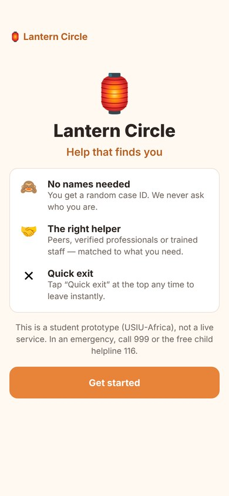
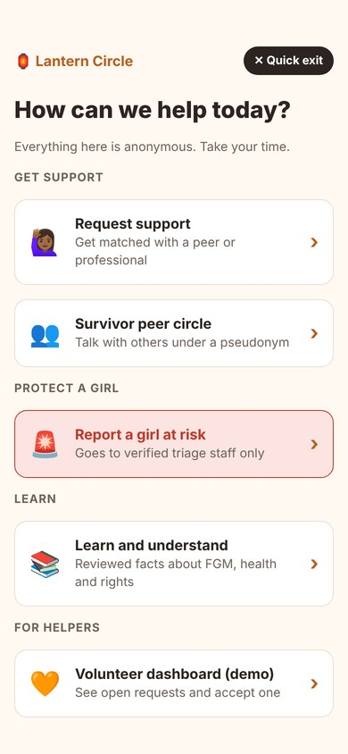
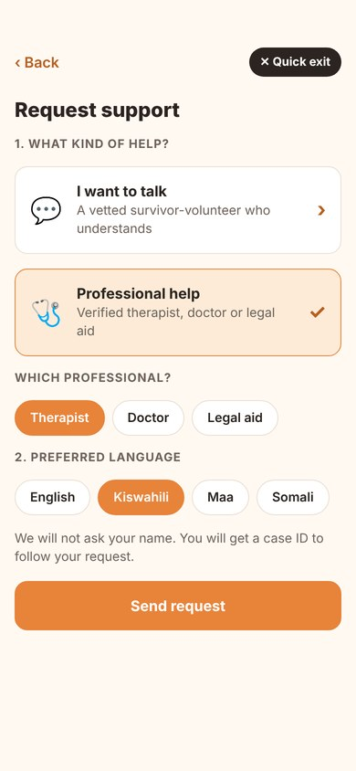
The user gets an anonymous case ID and a three-step tracker. With no reply in time, the request widens to more helpers.
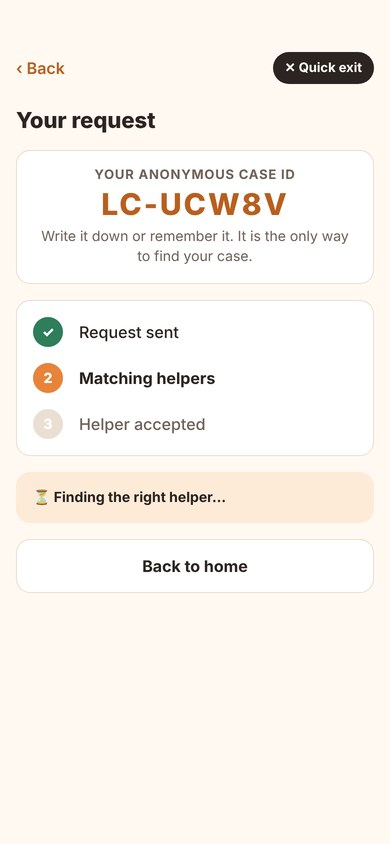
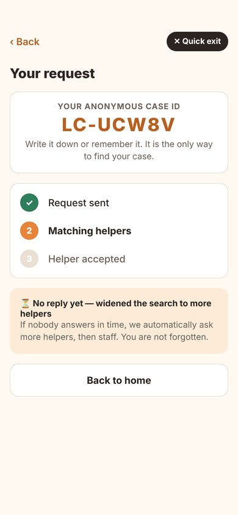
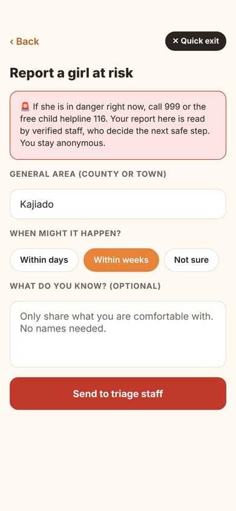
Reports go to verified staff. On the helper side, the first volunteer to accept takes the case and it cannot be accepted twice.
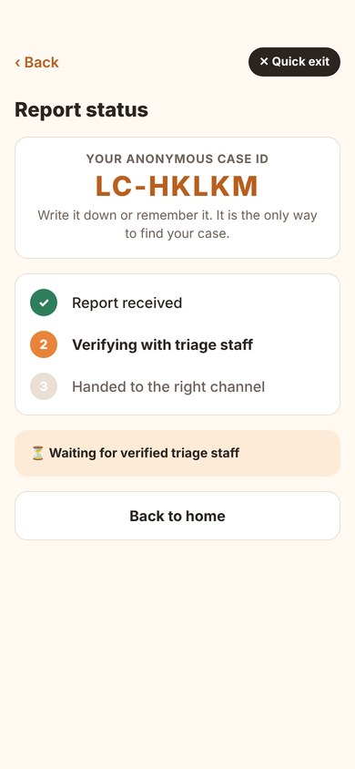
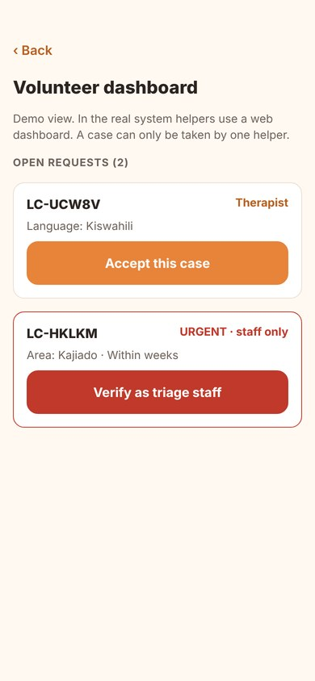
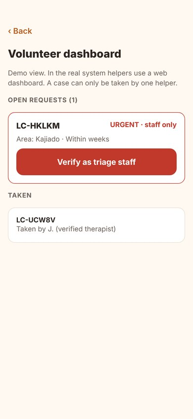
The home screen shows the active case; the tracker completes and the user can message the helper privately.
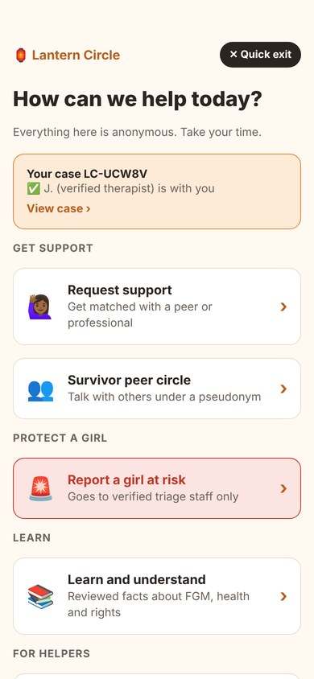
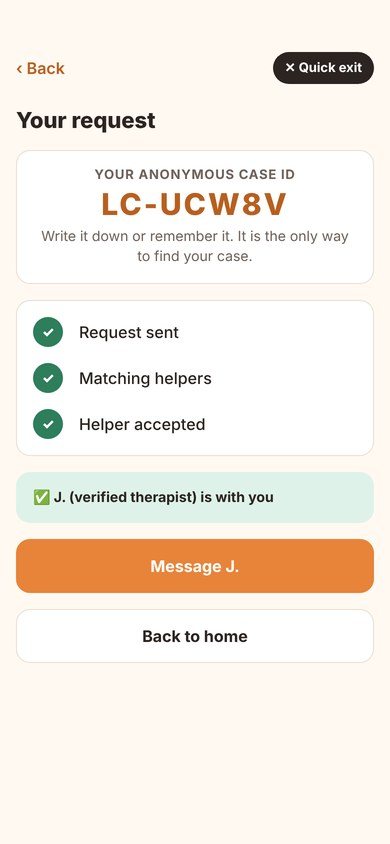
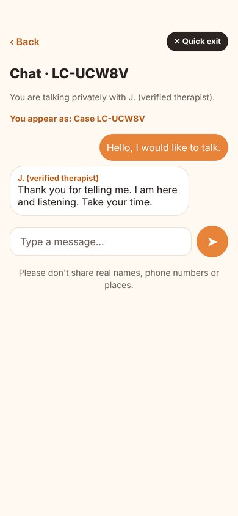
Survivors talk under a pseudonym, anyone can learn reviewed facts, and one tap hides the app behind a weather screen.
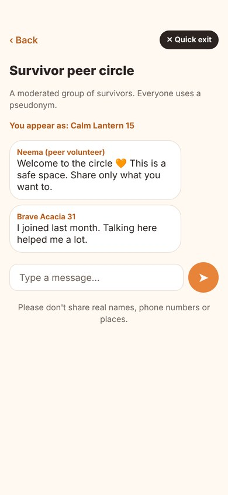
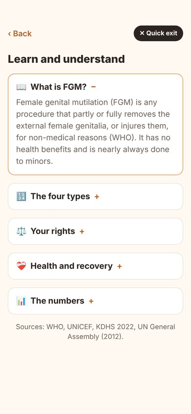
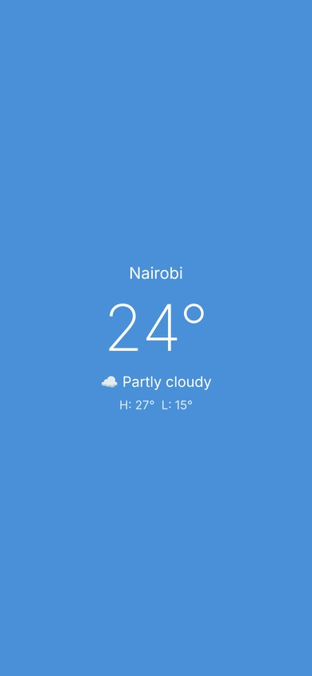
All app data lives in App.js, which decides which screen to show. Screens only display data and report taps, so a beginner can follow the code without a navigation library.
App.js app state, which screen is shown, simulated matching
src/theme.js colours, spacing, text sizes
src/components.js Screen, Button, OptionCard, Chips, Card, Label
src/data.js help types, languages, learn topics, ID generators
src/screens/ Welcome, Home, Request, Status, Report, Chat,
Learn, Volunteer, Exit
Urgent reports start in triage and skip escalation, because only staff handle them. In the full system, the in-memory state becomes a Django REST API and database, the timers become APScheduler jobs, and Africa's Talking adds SMS. The screens stay the same.
App.js.All 12 test cases passed: 11 in an automated walkthrough with no console errors, and one by hand on an iPhone through Expo Go.
| # | Test case | Expected result | Result |
|---|---|---|---|
| T1 | Open the app | Welcome screen loads | Pass |
| T2 | Send without a help type | Send button stays disabled | Pass |
| T3 | Send a professional-help request | Case ID, "Matching helpers" | Pass |
| T4 | Wait with no reply | "Widened the search" | Pass |
| T5 | Submit a risk report | "Waiting for verified triage staff" | Pass |
| T6 | Volunteer accepts a case | Taken; requester sees "is with you" | Pass |
| T7 | Accept the same case twice | Second accept has no effect | Pass |
| T8 | Message the helper | Message shown; helper replies | Pass |
| T9 | Open the peer circle | Random pseudonym shown | Pass |
| T10 | Expand a Learn topic | Opens and closes | Pass |
| T11 | Tap Quick exit | Data cleared; weather screen | Pass |
| T12 | Run on a real iPhone | Opens by QR code in Expo Go | Pass |
These tests check the app works as designed. The pitch's research goals, such as time to first response against a shared inbox, need the real backend and volunteers.
The prototype shows the Lantern Circle idea works as a phone app. A user can ask for help, report a girl at risk, and talk to a helper or peers without giving a name, and can leave in one tap. The next step is the Django backend and SMS access, so real helpers and basic phones can join.
git clone https://github.com/Markasii01/Lantern-Circle.git then cd Lantern-Circlenpm install then npx expo startnpx expo start --tunnel.